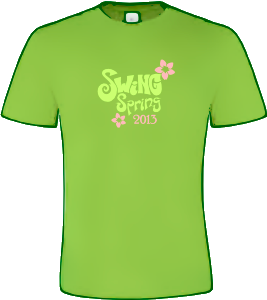
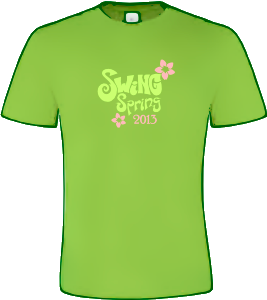

Tule Himokselle 8.-12.5.2013 tanssimaan lindy hoppia! Swing Spring on kaikille Suomen lindy hoppareille suunnattu leiri, jossa opettaa Suomen lindy hop -opettajien parhaimmisto. Leiribändiksi olemme pyytäneet Jimbino Vegan and the Jazz Cannibalsin New Orleansista saakka ja live-musiikkia on luvassa jopa kolmena iltana neljästä!
Muutama nimetön palaute viime vuoden leiriltä:
Hyvää opetusta ja hyvä ilmapiiri, kiitos!
YKKÖSTOIVE: JÄRJESTÄKÄÄ JATKOSSAKIN NÄITÄ LEIREJÄ!!!
Pitäkää mukana tuo iloisen mokailun ja hyväksymisen (ja irrottelun) filosofia ja levittäkää sitä laajalle!!!oli kyllä kaikenkaikkiaan todella mukava tunnelma leirillä. hienoa, että rohkaistiin tutustamaan muihin leiriläisiin ja tuli tosiaan tanssittua varmaan kaikkian kanssa
Opetustunnit olivat monipuolisia ja mielenkiintoisia. Opettajat pistivät oman persoonansa peliin, mikä huokui leiriläisille aitona tekemisenä ja huumorina. Lämpimät kiitokset!!
Himos oli paikkana erinomainen! Hyvä ravintola ja majoitus. Kaikki toimi hyvin!
Itse asiassa paras leiri mitä ollaan koskaan käyty.
Valitettavasti emme voi ottaa tällä hetkellä parittomia seuraajia, koska jonossa on jo useampi seuraaja. Kannattaa siis etsiä itselleen pari, sillä silloin saa parialennuksen ja varmistaa pääsyn leirille. Parisi ei tarvitse olla samantasoinen. Jonotuslistalla olevat seuraajat voivat etsiä paria esim. Facebookissa. Parialennuksen saa myös jälkeenpäin!
Leiripaidat ovat saapuneet ja hienoja ovat! Kaikkia kokoja on vielä jäljellä, tosin joitakin kokoja vain muutama. Jos olet ilmoittautunut, mutta et vielä varannut paitaa ja sellaisen haluaisit, voit pistää viestiä osoitteeseen swingspring (at) lindyhop . fi!
Jimbino Vegan and the Jazz Cannibals tulee suoraan New Orleansista, ja on kunnon kamaa! --> Katso video täältä!
Ilmoittautuminen on auennut! Nopeimmat ilmoittautujat saavat parhaat alennukset! Pääset ilmoittautumislomakkeeseen tästä.
Ilmoittautuminen avataan sunnuntaina 16.12.2012 klo 15:00. Tervetuloa leirille!
Swing Springin iskuryhmä kävi testaamassa leiripaitoja! Parhaaksi valikoitui laadukkaasta kankaasta tehty, keväisen vihreä t-paita, josta löytyy oma mallinsa sekä miehille että naisille. Upealla Swing Spring 2013 -logolla varustetun leiripaidan voit tilata itsellesi ilmoittautumisen yhteydessä!
 

Vettä on taas virrannut Jämsänkoskessa, ja Swing Spring järjestäjät ovat syksyn tullen aktiivisimmillaan. Voimme ylpeinä vahvistaa, että Swing Spring -leiri saa jatkoa! Tanssimme 9.-12.5.2013 samoissa Himoksen maisemissa kuin viimeksikin. Paljon hyvin toiminutta pidämme, ja jotain myös muutamme, uudistamme ja parannamme! Tavoitteena on vähintään yhtä mukava leiri kuin viimeksi niin valmennuksen, iltatanssien kuin muidenkin järjestelyjen osalta.
Uudella leirillä on vastaavat aikaisen ilmoittautujan alennukset kuin viimeksi, ja ekana tiedotamme edellisen leirin leiriläisiä sekä facebook-ryhmämme jäseniä - käy siis liittymässä ryhmään ja saat parhaat alennukset. Tekijät ovat pääosin samoja - aina toki muutama vaihtuu muissa kiireissä - ja allekirjoittanut nakitettiin leirinjohtajaksi, ja fiilis järjestelyporukassa on hyvä!
Laita aika kalenteriin!
Leiritoimikunnan puolesta,
Riikka